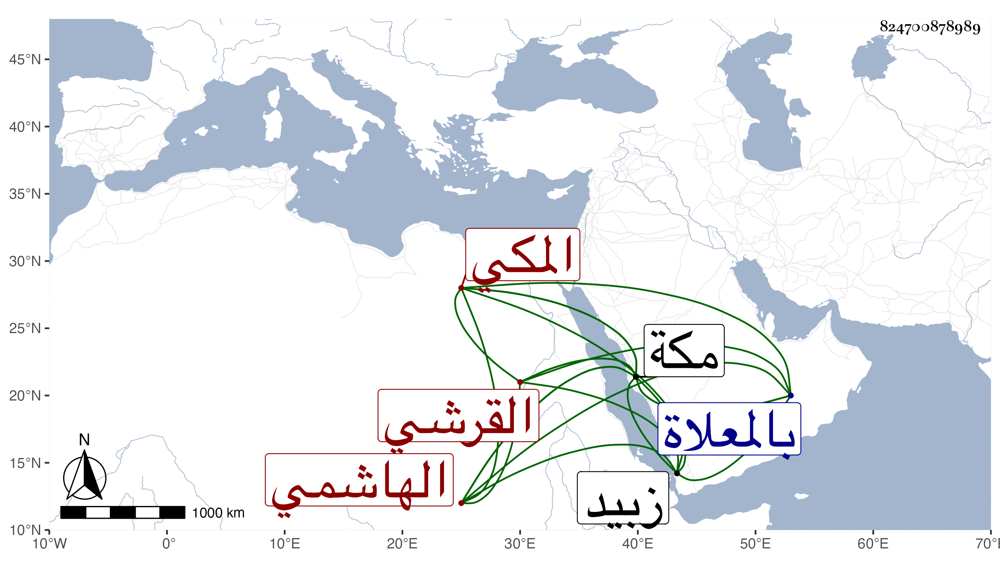

0902Sakhawi.DawLamic.ITO20230111-ara1.EIS1600.824700878989
Biography ID: 824700878989
511
عيسى بن موسى بن علي بن قريش بن داود القرشي الهاشمي المكي ويلقب بالعماد . عني بحفظ القرآن وله بضع وعشرون سنة فجوده وأكثر التلاوة مع التجارة بحيث استفاد عقارا بمكة ونواحيها وصاهر النجم المرجاني على ابنته فولدت له أولادا وتزوج قبلها بابنة السراج عبد اللطيف بن سالم ولازم خدمة أبيها أيام ولايته شد زبيد بحيث كان ذلك ابتداء تجمله ، ومات سنة خمس وعشرين بمكة ودفن بالمعلاة وقد قارب الخمسين ، ذكره الفاسي .
